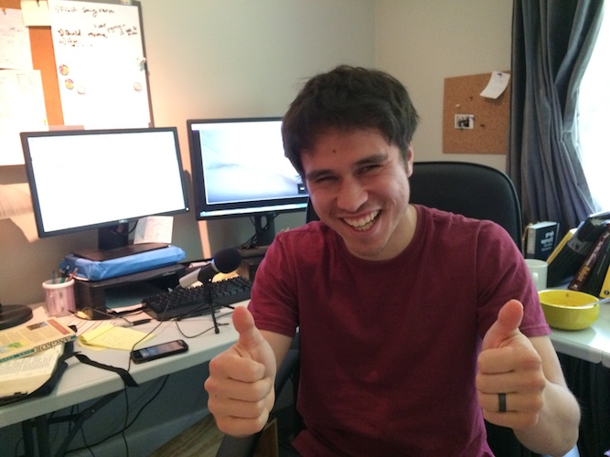
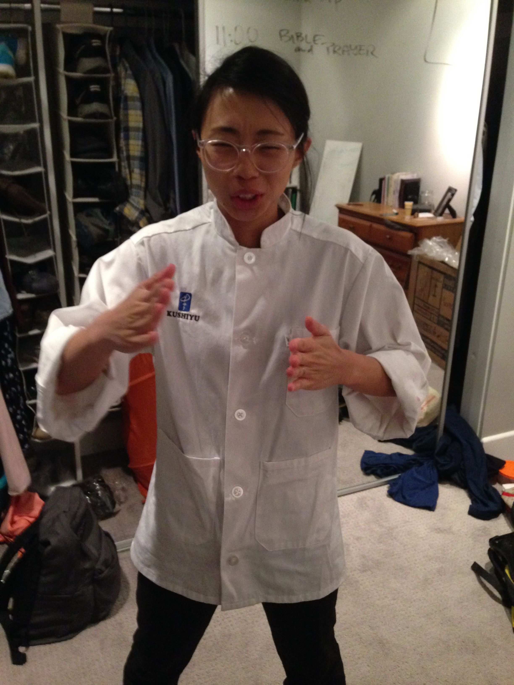

Settling In & Working Hard
 Who has two thumbs and work?! That guy! ^ We’ve had some time to slow down a little since the wedding and have been able to look into more job opportunities!
Laney, Ryan’s missionary friend in Japan that has been showing Ryan the ropes, has graciously worked out a plan to give Ryan some steady part-time work until June (doing web development). We are so thankful for this opportunity for Ryan to learn more and for us to save up money, specifically for our first year in Cambodia dedicated to learning Khmer.
AND THEN, Ryan happened to stumble upon some part-time work that offers only a few hours, but that is
- remote! (a huge blessing because it’s difficult for Ryan to work in an office using his voice to program and for the future in Cambodia)
- a great chance for him to different programming languages
- a gateway to potentially more work!
 Rebekah thinks she’s a sushi chef In addition, while Rebekah was working with autistic children as a behavioral therapist, some logistical & financial issues arose and that job has come to an end. Rebekah has recently found a job as a server working at a sushi restuarant near our home! She will continue to work as a teaching assistant a couple days a week until the end of the school year.
In the near, near future we will be leaving for Seattle for the ACTION Orientation for Rebekah. We will be leaving this Saturday (4/22) and Rebekah will be staying until the next Saturday (4/29) while Ryan will leave a little earlier (the 25th) to go back to LA to work.
Regarding our timeline and finances, it’s becoming more likely that we will be able to leave for Cambodia late summer or early fall! Hopefully we will be able to set a more precise target date when we talk to ACTION in a week or so.
Therefore, please pray
- For diligence in working
- That our diligence will be motivated by the glory and fear of God– the desire to be good and faithful stewards
- As we interact with non-believers, that our attitude and perseverance would show the light of Christ.
- That we would not expect a certain “return” or “result” for our work (i.e. because we have worked x-amount of hours, we will definitely be able to go to Cambodia at such-and-such time), trusting that God alone is in control and that His plan is good, regardless of what happens.
- For the ACTION orientation– that Rebekah and the other missionary candidates will use their time at the orientation intentionally, with wisdom, and with open hearts.
We are continually being reminded of how much God has given us. Particularly, we are thankful that we are not pursuing missions, or whatever God’s greater plan may be, alone, but that we have the support and encouragement of His body. Thank you for your prayers and love (in many different forms!).